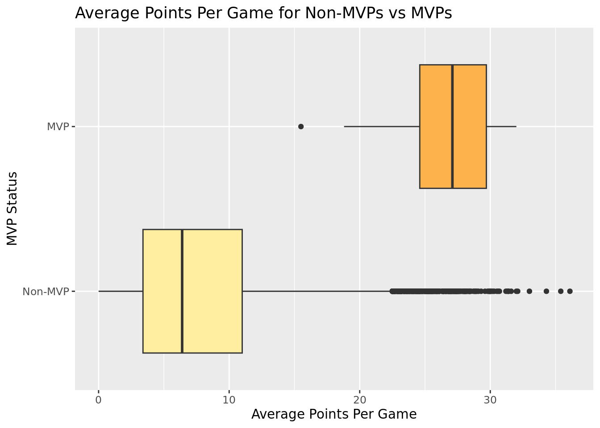
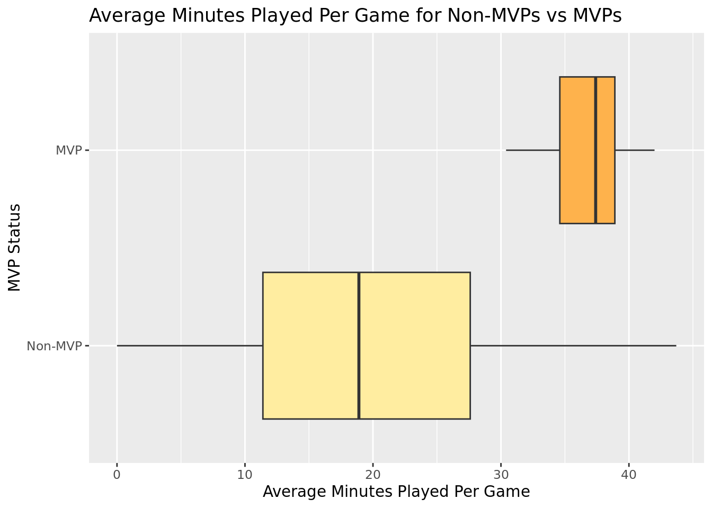
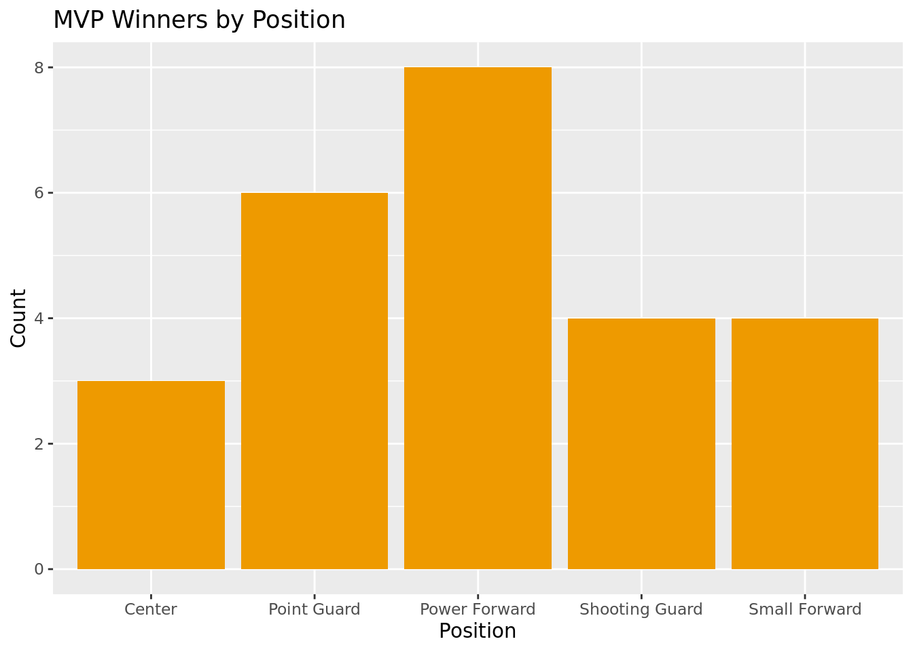
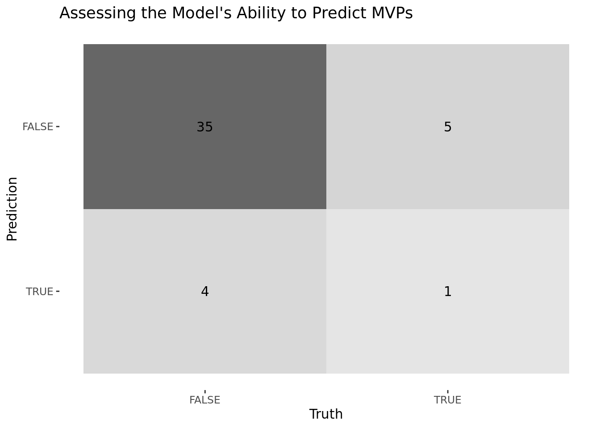

| MVP Status | Number of Observations | Percent |
|---|---|---|
| FALSE | 14548 | 99.8284499 |
| TRUE | 25 | 0.1715501 |
Key Attributes of an MVP
Report
Introduction & Literature Review
As Duke University students, we are very interested and invested in basketball. Each year, Duke sends basketball players to the NBA and many perform very well throughout their professional careers. Our group is interested in what distinguishes good players in the NBA from great, exceptional players. Particularly, how is a single MVP chosen from hundreds of professional basketball players each season?
We considered Vivek Datta’s findings during our research on this topic, which he details in “Evolution of the NBA” (Datta 2018) Written in 2018, this article articulates the progression of NBA individual players, teams, and rules from 1976 to 2018. Datta explains that offense has become less structured and more fast-paced over the aforementioned time period; offenses previously depended on larger men to score, but now primarily rely on three-pointers. This forces the defense to spread out, and larger men must therefore have greater agility to guard smaller guards. Further, the NBA shifted to a prohibition of hand-checking, which is the defender’s use of hands and arms to prevent an offensive player from moving forward. This change has enabled smaller players to be more competitive by reducing contact and increasing perimeter (mid-range) shots. These factors, coupled with many others Datta discusses, have a large impact on player performance and subsequent effect on MVP selection criteria.
While Datta’s study investigates the 1976-2018 seasons, his research is broader than our interests. He focuses on large-scale trends between offense and defense in his analysis. We want to focus more on the qualities that best predict MVPs rather than changes to the overall game and will thus investigate the 1997-2022 seasons to identify emerging trends in MVP selection criteria.
Research Question
Our research question for this dataset is the following: Which qualities are the best predictors of NBA MVP status in the 1997-2022 seasons? This question is important as the NBA MVP award is the highest honor for an NBA player; many players work for most of their lives to achieve this award, and people of all ages admire those who earn the MVP award. It is important to have an understanding of why each MVP is selected and how he is different from those who precede and succeed him, so we can ensure the selection process has not become more arbitrary or reliant on factors outside of on-court performance over time.
A panel of members of the sports media chosen by the NBA vote to decide the regular season NBA MVP. Although the panelists are knowledgeable about basketball, the MVP selection process is subjective. Our project aims to determine what skills NBA MVP selection panelists value. We will compare MVPs from different years and compare MVPs to other players in the same season to find in which categories the MVP excelled or struggled. For the 1997-2022 basketball seasons, we hypothesize that the number of three-pointers per game is one of the best MVP predictors and that most of the best MVP predictors are related to offensive categories.
Data
Our data comes from NBA players’ game day statistics provided by the Basketball Reference website. This data was collected from the 1997-1998 season through the 2021-2022 season; it was organized by Eduardo Tocco, an information science and Tech student at the University of Arizona. Tocco was able to collect this public data as it had already been published by the NBA; more specifically, he scraped the data above from the site Basketball Reference which uses official NBA data. Our dataset is made up of 14,753 entries (rows) and 31 total columns. Each observation represents a player/year combination. Each observation also contains additional information on player position, age, team, and various basketball-related statistics. The statistics relevant to this project are described below.
MVP - Reports True or False; indicates whether an observation (a player in a given year) won the MVP (True = Yes, False = No).
Average Points per Game
Average Minutes Played per Game
Number of Games Played
Average Field Goals per Game - field goals are baskets made on any shot other than a free throw.
Position - there are five possible positions: center, power forward, small forward, point guard, and shooting guard.
Field Goal Percentage - the ratio of field goals made to field goals attempted.
Number of Games Started - “Started” means the player was in the first squad of 5 players to play on the court at the beginning of the game.
2-Pointer Percentage - the ratio of 2-point shots made to 2-point shots attempted
Average Assists per Game - an assist is when a player passes the ball to a teammate who then proceeds to make a field goal.
Average Blocks per Game - a block is when a defensive player successfully prevents a field goal attempt from an offensive player.
Ethics
Though seemingly minor, when collecting/compiling/re-publishing data, it is essential that those collecting (in this case Eduardo Tocco) act ethically responsible by granting proper credit to the original source of the data (NBA). Moreover, although the original data was public, players and others relevant to the data should be kept informed when re-collecting and re-analyzing the statistics in different contexts; those compiling already public information should also still take into consideration the mental impact on players when stats from old games are being re-publicized and re-analyzed in new and different ways. In this case, it is especially true because the information relates to mistakes made in games and other emotion-provoking information that may impact player morality, well-being, and public relations.
Methodology
When the data was first read into RStudio, some changes were made to make the data set more workable.
- Variables that began with numbers (ex. 3P, which represents average three-pointers per game) were renamed to begin with letters (ex. threeP). This allowed for the variables to be read into data visualizations.
- The MVP variable was converted from a boolean to a factor and leveled such that the ordering was False then True. This ordering was chosen so that the logistic model (explained in future sections) would output probabilities of MVP status being True.
- A separate data set was also created that contained only the MVP winners (in the season they won the award). This allowed for data visualization and data re-balancing (explained in Methodology Part 2).
Part 1: Exploring the Data Set
The table above shows that the number of non-MVPs in the dataset vastly outnumbers the number of MVPs. Over 99.8% of the dataset is non-MVPs, while only .17% is MVPs.

| MVP Status | Median Average Points Per Game |
|---|---|
| MVP | 27.1 |
| Non-MVP | 6.4 |
The boxplot above compares the average points per game of MVPs and non-MVPs. There is a distinct difference in the average points scored per game across the two groups. The table confirmed this data: MVP winners (in the season they won the MVP) had a median score of 27.1 points per game on average, but non-MVP winners had a median score of 6.4 points per game on average. That is over a 4-fold difference in the median average points scored per game!

| MVP Status | Median Average Playing Time (Minutes) |
|---|---|
| MVP | 37.4 |
| Non-MVP | 18.9 |
The boxplot above compares the average minutes played per game of MVPs and non-MVPs. There is a distinct difference in the average minutes played per game across the two groups. However, in the non-MVP group, there is a much higher spread and much more variability in the data compared to the MVP group (likely due in part to a much higher number of observations). The table quantifies this data: MVP winners had a median average playing time of 37.4 minutes per game, and non-MVP winners had a median average playing time of 18.9 minutes per game. That is approximately a 2-fold difference in median average playing time per game!

The barplot above depicts the distribution of positions of only MVP winners. As the data shows, shooting guards, small forwards, and centers had about 3-4 MVP winners each from the 1997-2022 NBA seasons, and point guards and power forwards had slightly more MVP winners (6 and 8 MVP winners each, respectively) during that same time period. Unfortunately, because the data set of MVP winners is so small, it is difficult to draw conclusions from this data about whether certain positions are more likely to win the MVP award compared to others.
The data explorations above support the following conclusions:
The data set is very unbalanced. There is a disproportionate amount of non-MVP winners in the data set compared to MVP winners
High average points per game and high average playing time may be good indicators of MVP status.
No conclusions can be drawn about which positions are more or less likely to win MVP status.
Given these conclusions, we felt it was best to attempt to re-balance the data set before moving forward in our exploration. This is because our ultimate goal is to be able to predict MVP winners. When a data set is so unbalanced and the MVP winners are very diluted, it can be difficult to pick out trends within the data and build a model to predict whether a player is an MVP winner (as the model would default to non-MVP status due to the sheer quantity of those observations). Therefore, we re-balance the data set in the following section in an attempt to mitigate this issue.
Part 2: Re-balancing the Data Set
As mentioned previously, we are interested in identifying what differentiates MVPs from all other NBA basketball players. Thus, it makes sense that in order to understand the difference between good and great players, we choose a subset of excellent players for our smaller data set. Thus, we chose to re-balance our data set based on average points per game and average minutes played per game because those variables were previously shown to be higher in MVPs than non-MVPs.
First, we created a data set that contained the top 5 players with the highest average points per game for each season. Second, we created a data set that contained the top 5 players with the highest average playing time per game for each season. Then, we merged the data sets, keeping all observations from both data sets. If a given player-year observation was in both of the top 5 data sets, others were not added in. This decision was made to keep the size of the data set reasonably small. Finally, we merged the data set with the data set containing only the MVP winners.
The final data set contained 222 unique observations with the highest average scorers, the players with the most average playing time, and the MVPs from each season from the 1997-1998 season through the 2021-2022 season. This is much smaller than the original data set that contained 14,573 observations.
| MVP Status | Number of Observations | Percent |
|---|---|---|
| FALSE | 197 | 88.73874 |
| TRUE | 25 | 11.26126 |
As the table shows above, in the new data set, 11.3% of observations are MVP winners, and 88.7% are non-MVP winners. There is still an imbalance between MVP and non-MVP winners, but much less so compared to the original data set.
Part 3: Main Methodology
Now that we have re-balanced our data set, we plan to gain a more comprehensive understanding of which variables are best predictors of MVP status among these competitive players. As mentioned in our introduction, there are a variety of quantitative variables this data set provides, such as average steals per game, average defensive rebounds per game, average offensive rebounds per game…etc. There are 28 such columns that provide different statistics about a given player for a given season.
To answer our research question, we plan to build a logistic model that predicts the log odds of a given player-year observation being an MVP. The model with the lowest AIC is the combination of variables that best predicts the log odds of MVP status. The stepAIC is a method used for stepwise model selection. Given a data set and a set of variables, it can iterate through all combinations of such variables to identify which combination of variables provides the best logistic model to predict MVP status. We plan to use this stepAIC to determine which variables and what combination of them are best predictors of MVP status.
We then plan to assess the performance of this model. We will test the model on a portion of the data set it has not been trained on. A confusion matrix will be used to visualize the results. In particular, the matrix will display the number of true positives, true negatives, false positives, and false negative outcomes of the model.
Results
First, we split our data set into a training data set and testing data set. The training data set contains 80% of the observations and will be used to train the model. The testing data set contains 20% of the observations and will be used to test the model.
Then, we performed a forward stepAIC using the 26 basketball statistic variables from the data set to pick the “best” overall model for predicting MVP Status. All variables were input into the model. The model output is written below. The model gives the log odds of a player-year observation being an MVP given their statistics for the variables in the equation. The AIC for this model is 81.16.
\[\begin{align*} \log\Big(\frac{\hat{p}}{1-\hat{p}}\Big) = -31.00 + 0.6400 \times PTS + 103.1 \times FGPerc + 0.8510\times AST \\- 62.26 \times twoPPerc - 1.318 \times FG + 18.05 \times GS -18.03 \times G + 0.8793 \times BLK \end{align*}\]The following explanatory variables were included in the best-fit additive model: average points per game, field goal percentage, average steals per game, 2-pointer percentage, average field goals per game, number of games started, number of games played, and average blocks per game.
Holding other variables constant, variables with positive coefficients (ex. average points per game and field goal percentage) indicate an increase in such statistics increase the log odds of being MVP. On the other hand, variables with negative coefficients (ex. 2-pointer percentage and average and number of games played) indicate an increase in such statistics decreases the log odds of being MVP.
Additionally, certain variables have higher coefficients than others. This means that for a 1 unit increase in a given variable, we estimate on average a higher increase in the log odds of MVP status than that of a variable with a lower coefficient (holding all other variables constant). For instance, a 1 unit increase in field goal percentage (coefficient of 103.1) increases the log odds of MVP status more than a 1 unit increase in average blocks per game (coefficient of 0.8793).
Overall, this model identifies the 8 predictors that best predict MVP status from the input data set, which answers our central research question. It also tells us whether an increase in those predictors increases or decreases the log odds of MVP status and how much we estimate on average each variable changes the log odds of MVP status per a 1 unit change in that variable.
Assessing the Predictive Strength of the Model

The confusion matrix above shows the model results on the testing data set. Given that a player-year observation is an MVP, the model correctly predicts this 16.67% of the time. This indicates the sensitivity of the model is low. Given a player-year observation is not an MVP, the model correctly predicts this 89.74% of the time. This indicates the specificity of the model is high.
The F-1 score of this model is .1818. F-1 score was chosen as a metric to evaluate the model because it is a good metric for imbalanced data. Ideally, F-1 scores should be high (close to 1). Our low F-1 score indicates this model has weak overall performance.
This serves to qualify the validity of the answer to our research question above (the 8 proposed best predictors from our model) as it suggests the model is not very reliable.
Discussion
Summary
The goal of our data analysis was to pinpoint the qualities that the NBA values the most when selecting an MVP. We hypothesized that the average number of three-pointers per game would be one of the best MVP predictors and that most of the best MVP predictors are related to offense. To find the best model for predicting MVPs, we used step-wise logistic regression, which outputted the model with the following explanatory variables: average points per game, field goal percentage, number of games started, 2-pointer percentage, average assists per game, average field goals per game, number of games played, and average blocks per game has the lowest AIC. Since the average number of three-pointers per game is not among these eight best predictors of MVP status, that part of our hypothesis was not supported. However, many of the variables the model outputted were related to offense (ex. average points per game, field goal percentage, average assists per game), which supports that component of our hypothesis.
Furthermore, our confusion matrix assessed the predictive strength of the model generated from the stepAIC procedure. Our output indicated that our model was a relatively poor predictor of MVP status. This is likely in part because our data set was still largely unbalanced, despite efforts to re-balance it. The weakness of our model tells us we can not conclude the 8 variables outputted by the model are confidently the best predictors of MVP status. Rather, further statistical analysis is required to verify and refine these findings.
Reliability & Validity of Data
It is important to consider the reliability and validity of our data. Our data on offensive statistics being strong predictors of MVP status makes sense given what we know in the context of the NBA. The NBA has a strong emphasis on offensive performance. This helps to validate some of our findings. In terms of reliability of the data, the NBA has automated systems for collecting player statistics and cameras installed in the catwalks of every NBA arena. Furthermore, Second Spectrum software tracks the movements of every player on the court and the basketball 25 times per second. This strengthens the reliability of the data, given the rigor at which it is collected.
To expand on the reliability and validity of our data, we chose our re-balance our data set based on the average points per game and average minutes played per game. In retrospect, while average points per game was one of the 8 predictors of the model output, average minutes played per game was not. This indicates the data set input into the model could have made the model less reliable. In the future, the data set could be subset based on field goal percentage and number of games started, as those two variables had high positive coefficients, meaning per 1 unit increase in those variables, they most increased the log odds of MVP status compared to the other variables.
Scope of Inference
The scope of inference is relatively limited to the NBA at the current time range. The NBA differs from the WNBA and the EuroLeague in that the NBA is much more offensively focused, which means the skills valued in an MVP in one league may not transfer over to the other leagues. In these cases, other leagues may place more value on defensive qualities, such as average blocks or steals per game, which may be better predictors of MVP status. The scope of inference is also limited by time. Although not explored in this project, it is likely that the qualities that the NBA values change over time, meaning a model that successfully predicts MVPs from the 1997-2022 seasons may not be as relevant in future years.
Limitations & Future Areas of Research
A limitation touched upon in the previous subsection was how our findings may not translate through time given the changing nature of valued MVP qualities. To contemporize our findings, we can collect data from upcoming NBA seasons and add them to the data set to see how new players and seasons affect our findings.
Another central limitation of our project is the imbalance in our data set between MVPs and non-MVPs. While this will always be an issue due to the inherent selectivity of the award, this issue can be minimized by performing analyses on only MVP-nominated players across many seasons. This could help to better assess what makes MVP winners stand out amongst other MVP nominees while keeping the data set size relatively small.
An area for future research and exploration is using a different type of logistic model. In this project, we fit a step-wise additive model, but we also could have fit an interactive model. This interactive model would add a layer of complexity to the model by exploring how multiple variables interact with one another to influence MVP status. If the AIC of the interactive model is lower than that of the additive model, it may help to better predict the likelihood of MVP status.
References
Datta, Vivek. 2018. “Evolution of the NBA.” Sports Analytics Group Berkley. https://sportsanalytics.berkeley.edu/articles/nba-evolution.html.